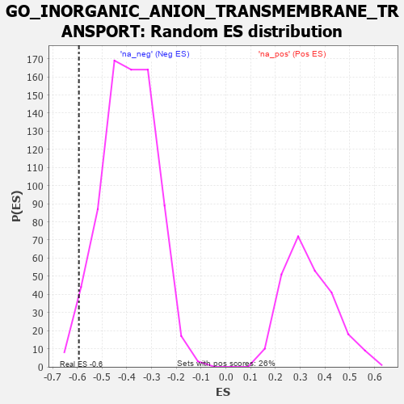

| | | Dataset | 7d |
| Phenotype | NoPhenotypeAvailable |
| Upregulated in class | na_neg |
| GeneSet | GO_INORGANIC_ANION_TRANSMEMBRANE_TRANSPORT |
| Enrichment Score (ES) | -0.59351623 |
| Normalized Enrichment Score (NES) | -1.5133065 |
| Nominal p-value | 0.026845638 |
| FDR q-value | 0.17786811 |
| FWER p-Value | 1.0 |
Table: GSEA Results Summary
 Fig 1: Enrichment plot: GO_INORGANIC_ANION_TRANSMEMBRANE_TRANSPORT
Fig 1: Enrichment plot: GO_INORGANIC_ANION_TRANSMEMBRANE_TRANSPORT
Profile of the Running ES Score & Positions of GeneSet Members on the Rank Ordered List
| PROBE | GENE SYMBOL | GENE_TITLE | RANK IN GENE LIST | RANK METRIC SCORE | RUNNING ES | CORE ENRICHMENT | | 1 | GLRA2 | | | 1892 | 0.321 | -0.2137 | No |
| 2 | ANO6 | | | 2339 | 0.255 | -0.2504 | No |
| 3 | CLCN7 | | | 2931 | 0.161 | -0.3126 | No |
| 4 | ANO1 | | | 2982 | 0.152 | -0.3073 | No |
| 5 | GLRA1 | | | 3957 | 0.001 | -0.4298 | No |
| 6 | CLIC6 | | | 4037 | -0.014 | -0.4386 | No |
| 7 | MTOR | | | 4114 | -0.025 | -0.4463 | No |
| 8 | NMUR2 | | | 4646 | -0.127 | -0.5035 | No |
| 9 | CLCN3 | | | 4678 | -0.134 | -0.4972 | No |
| 10 | BEST3 | | | 5106 | -0.227 | -0.5337 | No |
| 11 | CLCN2 | | | 5224 | -0.250 | -0.5295 | No |
| 12 | ANO8 | | | 5734 | -0.387 | -0.5642 | Yes |
| 13 | GLRB | | | 5776 | -0.398 | -0.5391 | Yes |
| 14 | BEST2 | | | 5811 | -0.408 | -0.5124 | Yes |
| 15 | ANO4 | | | 6061 | -0.494 | -0.5063 | Yes |
| 16 | XPR1 | | | 6250 | -0.555 | -0.4878 | Yes |
| 17 | GLRA3 | | | 6469 | -0.648 | -0.4661 | Yes |
| 18 | GRM5 | | | 7053 | -0.969 | -0.4659 | Yes |
| 19 | CFTR | | | 7143 | -1.030 | -0.3990 | Yes |
| 20 | BEST4 | | | 7192 | -1.065 | -0.3243 | Yes |
| 21 | BEST1 | | | 7601 | -1.554 | -0.2578 | Yes |
| 22 | ANO7 | | | 7727 | -1.838 | -0.1341 | Yes |
| 23 | CLCA1 | | | 7824 | -2.171 | 0.0185 | Yes |
Table: GSEA details [plain text format]

Fig 2: GO_INORGANIC_ANION_TRANSMEMBRANE_TRANSPORT: Random ES distribution
Gene set null distribution of ES for GO_INORGANIC_ANION_TRANSMEMBRANE_TRANSPORT